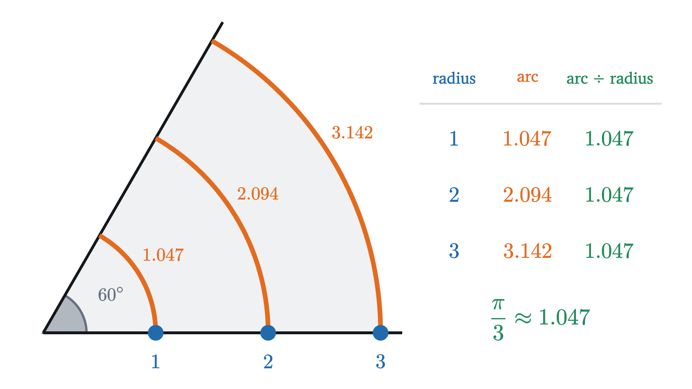
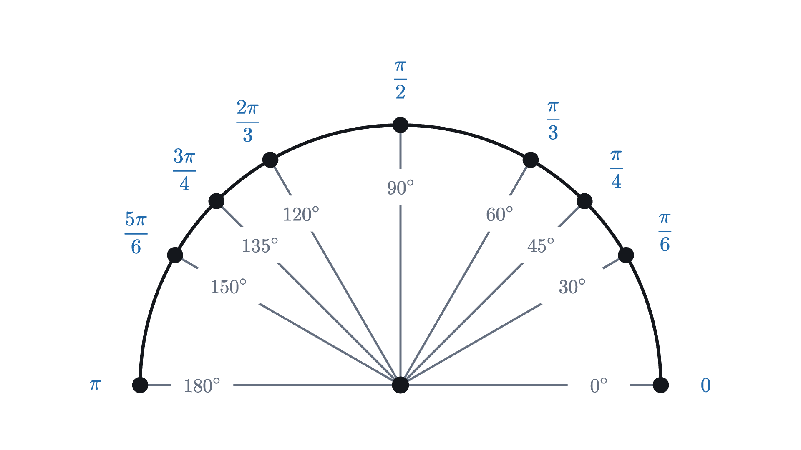
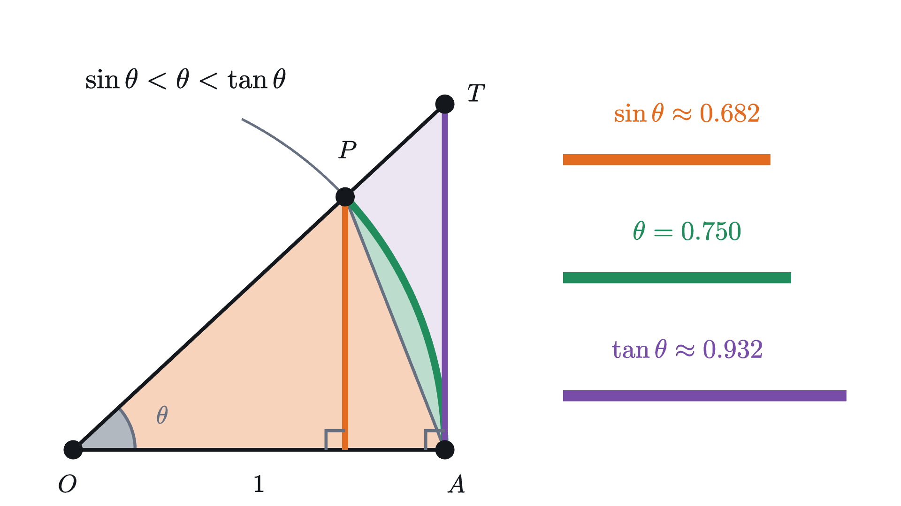
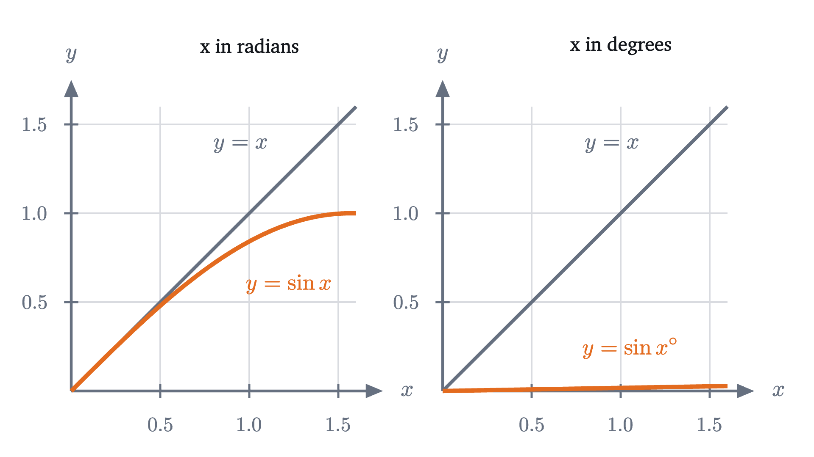

Radians: measuring an angle by the arc it cuts
A radian is the angle whose arc is as long as the radius. With it, arc length, sector area and the rule sin θ ≈ θ need no conversion constants.
AssumesThe unit circle: sine and cosine as coordinatesWhy the area of a circle is πr²
Set a calculator to degrees and ask for $\sin 1$. It says $0.01745$. Switch it to radians and press the same keys: $0.84147$. The two answers differ because “1” names two different angles, one degree in the first mode and something much larger in the second.
That much is only a matter of units, like meters and feet. The stranger fact is that mathematics takes sides. The formulas of calculus for sine and cosine, beginning with “the derivative of sine is cosine”, are true in radian mode and false in degree mode. No formula for a length cares whether you measure in meters or feet. So what is special about the radian?
Where 360 comes from
A degree is a full turn divided into 360 parts. The number 360 was chosen by people. It is usually traced to Babylonian astronomers, who counted in sixties, and a common explanation is that the sun takes roughly 360 days to return to its place among the stars. It is a convenient choice, since 360 can be divided evenly by 2, 3, 4, 5, 6, 8, 9, 10 and 12. But nothing about a circle produces it. A different culture could have chosen 400 or 100, and geometry would look the same.
A unit that mathematics could prefer would have to come from the circle itself. An angle at the center of a circle cuts off a piece of the circle, an arc, and a wider angle cuts off a longer one. So the natural thing to try is to measure the angle by the length of its arc.
Measuring an angle by its arc
The first attempt fails at once, and the way it fails shows the repair. Take one fixed angle, 60°, and draw circles of radius 1, 2 and 3 around its corner.

The same angle has arcs of three different lengths, so arc length alone measures the circle as much as the angle. The table shows what to do about it. A circle of radius $r$ has circumference $2\pi r$, and 60° is one sixth of a full turn, so its arc is one sixth of the circumference:
The arc is proportional to the radius, so dividing by the radius leaves a number, $\frac{\pi}{3}$, that belongs to the angle alone. The reason is that all circles are scaled copies of one another: enlarging the picture by a factor of 2 doubles the radius and the arc together.
The definition says “a circle of radius $r$” without saying which one, and the computation above is why it may: the ratio $s/r$ comes out the same on every circle centered at the corner. On a circle of radius 1 it is the arc length itself. A radian measure is a length divided by a length, so it is a pure number with no unit. The word “radians” after it is a reminder of how the number was obtained.
The opening animation builds one radian: a piece as long as the radius is bent onto the circle, and the angle it spans is 1.
Pause and try
Is one radian more or less than 60°? Decide without computing anything, using this fact: if you join the two ends of a 60° arc to the center and to each other, you get an equilateral triangle.
Show answerHide answer
In that equilateral triangle the straight side joining the ends of the arc (the chord) has length $r$. The arc between the same two points is curved, and a straight line is the shortest path between two points, so the 60° arc is longer than $r$. An arc of length exactly $r$ is therefore shorter than the 60° arc, and one radian is less than 60°. We found above that the 60° arc is $1.047\,r$, so one radian is 60° divided by $1.047$, about 57.3°.
How many radians make a full turn
A full turn is the angle whose arc is the whole circle. Before stepping through the next figure, guess how many radius lengths it takes to go once around.
The count is not a whole number, and it could not have been. The arc of a full turn is the circumference, $2\pi r$, so the radian measure of a full turn is $\frac{2\pi r}{r} = 2\pi \approx 6.283$. This is the definition of $\pi$ seen from a new side: $\pi$ is the number of radius lengths in half a circle.
Everything about converting units follows from the one equation
Dividing by 180, one degree is $\frac{\pi}{180} \approx 0.01745$ radians, and dividing by $\pi$ instead, one radian is $\frac{180°}{\pi} \approx 57.296°$. To convert degrees to radians multiply by $\frac{\pi}{180}$; to convert radians to degrees multiply by $\frac{180}{\pi}$.

Arc length and sector area
Read backward, the definition $\theta = s/r$ is a formula for arc length: $s = r\theta$. The region between two radii and their arc, shaped like a slice of pie, is called a sector, and its area has a formula of the same kind.
Pause and try
A sector of a circle of radius 3 has an angle of 2 radians. What fraction of the full circle is it? Use that fraction to find the length of its arc and its area. (The circle has circumference $6\pi$ and area $9\pi$.)
Show answerHide answer
A full turn is $2\pi$ radians, so the sector is $\frac{2}{2\pi} = \frac{1}{\pi}$ of the circle, a little under a third. Its arc is $\frac{1}{\pi} \times 6\pi = 6$ and its area is $\frac{1}{\pi} \times 9\pi = 9$. The factors of $\pi$ cancel and both answers are whole numbers.
Put the two formulas together and the area reads $A = \frac{1}{2} r \cdot s$, half the radius times the arc. That is the triangle formula “half the base times the height” with the arc as base and the radius as height, which fits how a thin sector looks.
In degrees the same formulas are $s = \frac{\pi}{180} r\theta$ and $A = \frac{\pi}{360} r^2 \theta$. The constants $\frac{\pi}{180}$ and $\frac{\pi}{360}$ are conversion factors and say nothing about circles. With radians they disappear, and this is the first sign of why radians are preferred.
Small angles: the sine of a small angle is nearly the angle
Now back to the calculator. Recall that on the unit circle, $\sin\theta$ is the height of the point reached by turning through the angle $\theta$ from the point $(1, 0)$. With $\theta$ in radians, the arc traveled on that circle of radius 1 has length $r\theta = \theta$. So on one picture we can compare two lengths: the height $\sin\theta$ and the arc $\theta$. Here they are for a few angles, in radians.
| $\theta$ | $1$ | $0.5$ | $0.1$ | $0.01$ |
|---|---|---|---|---|
| $\sin\theta$ | $0.84147$ | $0.47943$ | $0.09983$ | $0.0099998$ |
| $\sin\theta \div \theta$ | $0.8415$ | $0.9589$ | $0.9983$ | $0.99998$ |
The height is always a little less than the arc, and as the angle shrinks the two become hard to tell apart.
A short piece of a circle is nearly straight, and near the point $(1, 0)$ it runs nearly straight up. A nearly vertical, nearly straight path rises by almost its whole length. The following theorem makes “almost” exact. It involves one more length: extend the radius through the point until it meets the vertical line through $(1, 0)$. By similar triangles it meets that line at height $\frac{\sin\theta}{\cos\theta}$, which is called $\tan\theta$.

The second chain is the precise form of the pattern in the table. The ratio $\frac{\sin\theta}{\theta}$ is trapped between $\cos\theta$ and 1, and $\cos\theta$, the horizontal coordinate of a point approaching $(1, 0)$, is itself close to 1 when $\theta$ is small. At $\theta = 0.1$, for example, $\cos 0.1 \approx 0.9950$, so the ratio lies between $0.9950$ and 1, and the table’s $0.9983$ does.
Pause and try
The calculator in degree mode gave $\sin 1 = 0.01745$. Express 1° in radians to five decimal places. What does the comparison tell you about the ratio $\frac{\sin x°}{x}$ for small $x$?
Show answerHide answer
$1° = \frac{\pi}{180} \approx 0.01745$ radians, the same digits. That is the small-angle rule at work: the sine of an angle of $0.01745$ radians is very nearly $0.01745$. So for an angle of $x$ degrees, which is $\frac{\pi}{180}x$ radians, we get $\sin x° \approx \frac{\pi}{180} x$, and the ratio $\frac{\sin x°}{x}$ approaches $\frac{\pi}{180} \approx 0.01745$ where radians gave 1.

This is the reason calculus insists on radians. The derivative of sine at 0 is the slope at which its graph leaves the origin, and in radians that slope is 1. The full statement, that the derivative of $\sin\theta$ is $\cos\theta$, rests on exactly this limit. In degrees every such formula would carry a factor of $\frac{\pi}{180}$. Radians are the unit in which the arc of the unit circle and the angle are the same number, and that is why nothing needs converting.
Where the formulas stop working
The small-angle rule is for small angles. At $\theta = 0.2$ the estimate $\theta$ is above the true value $\sin 0.2 \approx 0.1987$ by under 1 percent of that value (by $0.67$ percent). At $\theta = 1$ the estimate is 19 percent above $\sin 1 \approx 0.8415$, and at $\theta = \pi$ the sine is 0 while the angle is $3.14$. The theorem itself is limited to $0 < \theta < \frac{\pi}{2}$, where the triangle $OAT$ exists.
The sector formulas hold for $0 \le \theta \le 2\pi$. The arc formula $s = r\theta$ continues to make sense beyond that if $s$ means the distance traveled by a point on the rim of a turning wheel, which can go around more than once.
Looking back
The difficulty was finding a measure of angle that does not depend on a human choice such as 360. Arc length alone failed because it changes with the size of the circle, and dividing by the radius removed that dependence. The same move, forming a ratio of two lengths to get a number that survives scaling, is what made sine and cosine properties of an angle in the first place.
What the ratio buys is that angle and arc become interchangeable on the unit circle. Arc length, sector area and the small-angle behavior of sine all lose their conversion factors. From here on in this series, and throughout calculus, an angle with no degree sign is in radians.
Check yourself
A circle has radius 4. How long is the arc cut off by a central angle of 90°?
Problems
Problem 1
Convert to radians: (a) 36°, (b) 210°. Convert to degrees: (c) $\frac{5\pi}{12}$, (d) $2.5$ radians.
Show solutionHide solution
(a) $36 \times \frac{\pi}{180} = \frac{\pi}{5} \approx 0.628$. (b) $210 \times \frac{\pi}{180} = \frac{7\pi}{6} \approx 3.665$. (c) $\frac{5\pi}{12} \times \frac{180°}{\pi} = \frac{5 \times 180°}{12} = 75°$. (d) $2.5 \times \frac{180°}{\pi} \approx 2.5 \times 57.296° \approx 143.2°$. As a check on (d), $2.5$ is a bit less than $\pi \approx 3.14$, and $143.2°$ is a bit less than 180°.
Problem 2
A circle has radius 6 cm. Find the arc length and the area of a sector with central angle $2.5$ radians.
Show solutionHide solution
$s = r\theta = 6 \times 2.5 = 15$ cm. $A = \frac{1}{2}r^2\theta = \frac{1}{2} \times 36 \times 2.5 = 45$ cm². Check with $A = \frac{1}{2}rs = \frac{1}{2} \times 6 \times 15 = 45$.
Problem 3
An arc of length 10 cm lies on a circle of radius 4 cm. What angle does it span at the center, in radians and in degrees? What is the area of its sector?
Show solutionHide solution
$\theta = \frac{s}{r} = \frac{10}{4} = 2.5$ radians, which is $2.5 \times \frac{180°}{\pi} \approx 143.2°$. The area is $\frac{1}{2}rs = \frac{1}{2} \times 4 \times 10 = 20$ cm². (The same angle as in the previous problem on a smaller circle: the arc and the area changed, the ratio $s/r$ did not.)
Problem 4
A round pizza 30 cm across is cut into 8 equal slices. Find the length of the crust on one slice and the area of the slice.
Show solutionHide solution
The radius is 15 cm and each slice has angle $\frac{2\pi}{8} = \frac{\pi}{4}$ radians. The crust is the arc: $s = 15 \times \frac{\pi}{4} = \frac{15\pi}{4} \approx 11.8$ cm. The area is $\frac{1}{2} \times 15^2 \times \frac{\pi}{4} = \frac{225\pi}{8} \approx 88.4$ cm². Check: the whole pizza has area $225\pi \approx 706.9$ cm², and one eighth of that is $88.4$ cm².
Problem 5
A bicycle wheel has radius $0.35$ m and rolls without slipping, so that the distance the bicycle travels equals the length of rim that has touched the road. (a) How far does the bicycle go while the wheel makes 20 full turns? (b) Through how many radians, and how many full turns, does the wheel rotate over 100 m?
Show solutionHide solution
(a) Twenty turns is $20 \times 2\pi = 40\pi$ radians, and the rim length rolled out is $s = r\theta = 0.35 \times 40\pi = 14\pi \approx 44.0$ m. (b) $\theta = \frac{s}{r} = \frac{100}{0.35} \approx 285.7$ radians. Dividing by $2\pi \approx 6.283$ gives about $45.5$ turns. Here $\theta$ is far larger than $2\pi$, which is fine: the wheel has gone around many times and $s = r\theta$ counts all of it.
Problem 6
A nautical mile was originally defined as the distance along the Earth’s surface that corresponds to one sixtieth of a degree of latitude. Taking the Earth to be a sphere of radius 6371 km, find the length of a nautical mile in kilometers.
Show solutionHide solution
Latitude is an angle at the center of the Earth, and moving north along the surface traces an arc of a circle of radius 6371 km. The angle is $\frac{1}{60}° = \frac{1}{60} \times \frac{\pi}{180} = \frac{\pi}{10800} \approx 0.00029089$ radians. So $s = r\theta \approx 6371 \times 0.00029089 \approx 1.853$ km. (The modern nautical mile is fixed at exactly $1.852$ km.)
Problem 7
Without using a sine key, estimate $\sin 3°$. Use the theorem $\cos\theta < \frac{\sin\theta}{\theta} < 1$ to explain why your estimate is slightly too large and, given that $\cos 3° \approx 0.9986$, to bound how far off it can be. Why is the answer “about 3” impossible?
Show solutionHide solution
Convert to radians: $3° = \frac{3\pi}{180} = \frac{\pi}{60} \approx 0.05236$. By the small-angle rule $\sin 3° \approx 0.05236$. The theorem says $\sin\theta < \theta$ for $0 < \theta < \frac{\pi}{2}$, so the true value is below the estimate. Its other half, $\sin\theta > \theta\cos\theta$, gives $\sin 3° > 0.05236 \times 0.9986 \approx 0.05229$. So $0.05229 < \sin 3° < 0.05236$, and the estimate is too large by less than $0.00008$, which is under $0.15$ percent. (A calculator gives $0.05234$.) The answer 3 is impossible because a sine is the height of a point on the unit circle and cannot exceed 1. It comes from applying $\sin\theta \approx \theta$ with the angle in degrees, where the correct rule is $\sin x° \approx \frac{\pi}{180}x$.
Problem 8
A chord of the unit circle spans a central angle $\theta$ with $0 < \theta < \pi$. (a) Show that the chord has length $2\sin\frac{\theta}{2}$. (b) Deduce from this lesson’s theorem that the chord is shorter than its arc. (c) Check both parts for $\theta = \frac{\pi}{3}$.
Show solutionHide solution
(a) Join the ends of the chord to the center. This makes a triangle with two sides of length 1 and the angle $\theta$ between them. The line from the center to the midpoint of the chord splits it into two congruent right triangles (they have the same three side lengths), each with hypotenuse 1 and angle $\frac{\theta}{2}$ at the center. The side opposite that angle is half the chord, and in a right triangle with hypotenuse 1 the opposite side is the sine of the angle. So half the chord is $\sin\frac{\theta}{2}$ and the chord is $2\sin\frac{\theta}{2}$.
(b) The arc has length $r\theta = \theta$. Since $0 < \frac{\theta}{2} < \frac{\pi}{2}$, the theorem gives $\sin\frac{\theta}{2} < \frac{\theta}{2}$, and doubling, $2\sin\frac{\theta}{2} < \theta$.
(c) For $\theta = \frac{\pi}{3}$ (60°) the chord is $2\sin\frac{\pi}{6} = 2 \times \frac{1}{2} = 1$, which matches the equilateral triangle in the lesson, and the arc is $\frac{\pi}{3} \approx 1.047 > 1$.
Problem 9
A piece of wire of length 20 cm is bent into the outline of a sector: two radii and an arc. Which radius and angle give the sector the largest possible area, and what is that area?
Show solutionHide solution
Let the radius be $r$ and the angle $\theta$ radians. The outline has length $2r + r\theta = 20$, so the arc is $s = r\theta = 20 - 2r$. Using $A = \frac{1}{2}rs$,
To find the largest value, complete the square: $10r - r^2 = 25 - (r - 5)^2$. The squared term is never negative, so $A \le 25$, with equality exactly when $r = 5$. Then the arc is $s = 20 - 10 = 10$ and the angle is $\theta = \frac{s}{r} = 2$ radians, which is allowed since $2 < 2\pi$. The best sector has radius 5 cm, angle 2 radians (about $114.6°$), and area 25 cm². The answer $\theta = 2$ does not depend on the length of the wire: with perimeter $p$ the same steps give $r = \frac{p}{4}$, $s = \frac{p}{2}$ and again $\theta = 2$.